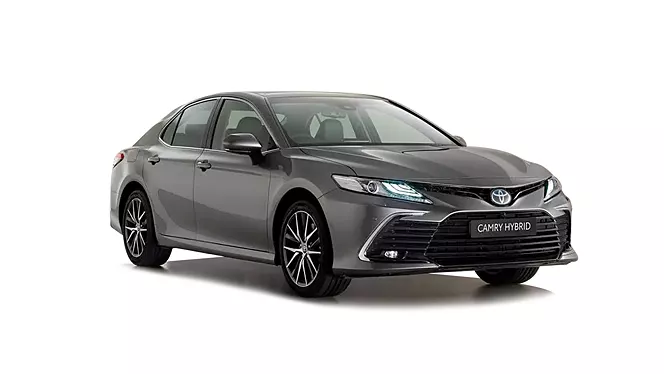
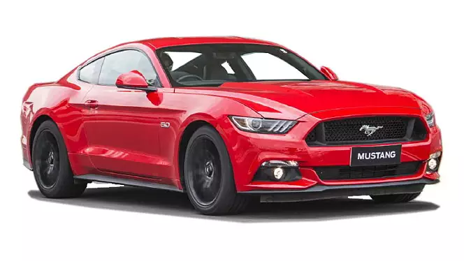

    <!DOCTYPE html>
    <html></html>
    <head>
        <title>History of cars</title>
    </head>
    <body>
    <hr>  
    
    &nbsp;&nbsp;&nbsp;&nbsp;&nbsp;&nbsp;&nbsp;&nbsp;&nbsp;&nbsp;&nbsp;&nbsp;&nbsp;&nbsp;&nbsp;&nbsp;&nbsp;&nbsp;&nbsp;&nbsp;&nbsp;&nbsp;&nbsp;&nbsp;&nbsp;&nbsp;&nbsp;&nbsp;&nbsp;&nbsp;&nbsp;&nbsp;&nbsp;&nbsp;&nbsp;&nbsp;&nbsp;&nbsp;&nbsp;&nbsp;&nbsp;&nbsp;&nbsp;&nbsp;&nbsp;&nbsp;&nbsp;&nbsp;&nbsp;&nbsp;&nbsp;&nbsp;&nbsp;&nbsp;&nbsp;&nbsp;&nbsp;&nbsp;&nbsp;&nbsp;&nbsp;&nbsp;&nbsp;&nbsp;
    &nbsp;&nbsp;&nbsp;&nbsp;&nbsp;&nbsp;&nbsp;&nbsp;

    
        <a href="./../index.html">Home</a>&nbsp;&nbsp; &nbsp; &nbsp;&nbsp;&nbsp;&nbsp;&nbsp; &nbsp;&nbsp;
    
        <a href="./../page/History.html">History</a> &nbsp; &nbsp;&nbsp; &nbsp;&nbsp;&nbsp;&nbsp;&nbsp; &nbsp;&nbsp;
    
        <a href="./../page/Types.html">Types</a> &nbsp;&nbsp;&nbsp; &nbsp;&nbsp;&nbsp;&nbsp;&nbsp; &nbsp;&nbsp;
    
        <a href="./../page/Company.html">Company</a> &nbsp; &nbsp;&nbsp; &nbsp;&nbsp;&nbsp;&nbsp;&nbsp; &nbsp;&nbsp;
    
        <a href="./../page/Cars&Feature.html">Feature</a> &nbsp; &nbsp;&nbsp; &nbsp;&nbsp;&nbsp;&nbsp;&nbsp; &nbsp;&nbsp;
        
        <b><a href="./../page/Models.html">Models</a></b> &nbsp; &nbsp;&nbsp; &nbsp;&nbsp;&nbsp;&nbsp;&nbsp; &nbsp;&nbsp;


    <hr>  
    <h1><i>Cars Model</i></h1>
    <b>1.Carmy</b> <br>
    <br>
    <br>
    </br>
    <p>
     The Toyota Camry has 1 Petrol Engine on offer. The Petrol engine is 2487 cc . It is available with Automatic transmission. Depending upon the variant and fuel type the Camry has a mileage of.
   </p>
   </br>
    </br>
    </br>
    <p>
        The Toyota Camry Hybrid is a premium executive sedan priced at Rs 41.7 lakh (ex-showroom). As a result, it goes up against the Skoda Superb, and even ventures into the BMW 2 Series Gran Coupe and Mercedes A-Class territory. Yes, this Toyota doesn’t have the same snob value, but remains one of the unique long three-box sedans with its own USPs, like hybrid power, focus on rear-seat comfort, etc. all of which we will get to in a bit. Camry is Toyota’s only sedan in India and now gets cosmetic updates and new features in its eighth-gen avatar.
    </p>
    </br>
    <b>2. Ford Mustang</b><br>
    <br/>
    <br>
    <br>
    <p>
        Ford Mustang is a 4 seater Coupe with the last recorded price of Rs. 74.61 Lakh. It is available in 1 variant, 4951 cc engine option and 1 transmission option : Automatic. Other key specifications of the Mustang include a ground clearance of 137 mm. and The Mustang is available in 6 colours. Ford Mustang mileage is 7.9 kmpl.
    </p>
    <br>
    
    <br>
    <p>
        So the Mustang is a sports car with very few flaws of one. Sure it is not perfect, but with that price tag, you get a lot of American muscle for your money. The Mustang has a rich heritage, is an icon and more importantly in the latest generation is an accomplished car too.
    </p>
    <br>
    <b>Model 3</b>
    <br>
    
    </br>
    <p>
        The Tesla Model 3 is a battery electric mid-size sedan with a fastback body style built by Tesla, Inc., introduced in 2017. The vehicle is marketed as being more affordable to more people than previous models made by Tesla.
    </p>
    </br>
    


    </body>
    </html>    